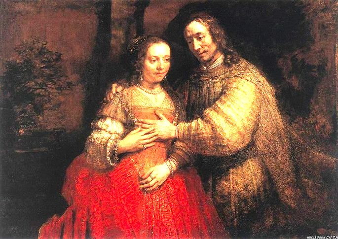
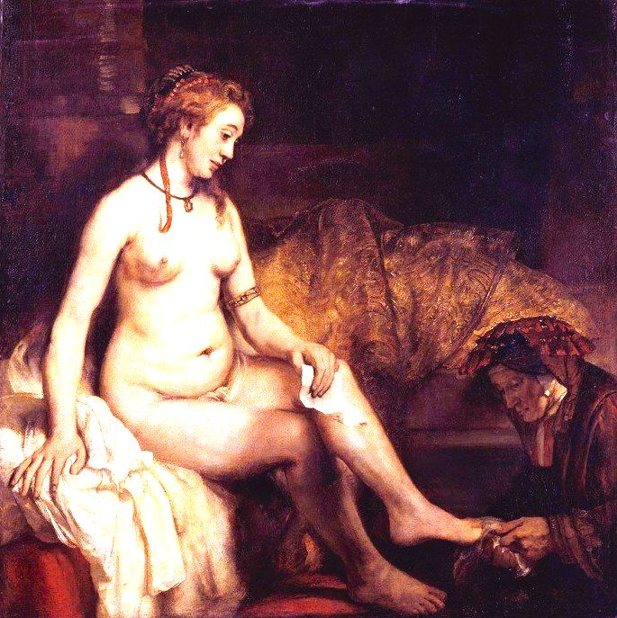

Auto retrato Rembrandt
Rembrandt Harmenszoon van Rijn (Leida, 15 de julho de 1606 – Amsterdam, 4 de outubro de 1669) foi um pintor e gravurista holandês. É geralmente considerado um dos
maiores nomes da história da arte europeia e o mais importante da história holandesa. É considerado, por alguns, como o maior pintor de todos os tempos. As suas contribuições à arte surgiram em um período
denominado pelos historiadores de "Século de Ouro dos Países Baixos", no qual a influência política, a ciência, o comércio e a cultura holandesa — particularmente a pintura — atingiram seu ápice.

A noiva Judia
A noiva judia é uma pintura de Rembrandt, pintada por volta de 1665 a 1669.
A pintura ganhou seu nome atual no início do século 19, quando um colecionador
de arte de Amsterdã identificou o assunto como o de um pai judeu dando um colar à
filha no dia do casamento.

Tobias Anna With
Tobit and Anna with the Kid, também intitulado Tobit Accusing Anna of Stealing
the Kid, e Tobit Praying for Death, é uma das primeiras pinturas a óleo do pintor
holandês da Era de Ouro Rembrandt, assinada e datada de 1626. Está agora no Rijksmuseum
em Amsterdã.

A ronda noturna 1642
Durante a guerra de independência da República Holandesa guardas cívicas
foram estabelecidas em várias cidades do país. Os vigilantes da cidade de Amsterdã(o)
na Idade de Ouro - arcabuzeiros ou mosqueteiros - estavam subordinados aos mandos dos
regentes de Amsterdã(o) e eram um tipo de policiais da cidade.Sua função original
e primária era defender a cidade contra invasores inimigos.
Como os membros dos grupos de vigilantes tinham que fazer a manutenção das suas
próprias armas, as camadas mais pobres da população foram praticamente excluídas.
Os membros das milícias pertenciam em sua maioria à classe média e os oficiais à classe
alta. Amsterdã foi dividida em vinte distritos em 1620, cada um formando um distrito
com suas próprias milícias de defesa. Para seus membros, havia um requisito de residência,
excepcionalmente, apenas os oficiais tinham permissão para morar fora do distrito do seu quartel.
A maior parte das pessoas representadas na Ronda Noturna são mosqueteiros, piqueiros, guarda civícos e
oficiais do grupo de vigilantes de Amsterdã do segundo distrito. Este distrito era localizado no oeste da
cidade, imediatamente ao sul da Nieuwe Kerk entre o Damrak e o Singel.

A volta do filho pródigo 1662
O Retorno do Filho Pródigo é uma pintura à óleo por Rembrandt. Está entre as ultimas obras do mestre holandês, possivelmente completada
dentre dois anos de sua morte, em 1669 Demonstra o momento do retorno do filho pródigo à casa de seu pai na parábola bíblica em Lucas 15:11–32,
a Parábola do Filho Pródigo. É uma obra aclamada, descrita pelo historiador de arte Kenneth Clark como "uma pintura que aqueles que visam a
original em São Petersburgo podem ser perdoados por considera-la o melhor quadro já pintado".
Na pintura, o filho voltou pra casa em um estado deplorável, pelas viagens em que gastou sua herança e caiu em pobreza
e desespero. Ele ajoelha perante seu pai em arrependimento. Desejando pro perdão e um restabelecimento de sua estatura familiar,
tendo percebido que até os servos de seu pai tem melhor vida que ele. Seu pai o recebe com um gesto terno. Suas mãos sugerem paternidade
e maternidade em um; a mão esquerda parece maior e masculina, repousa sobre o ombro do filho, enquanto a direita é menor e mais delicada,
com um gesto mais acolhedor.À direita está o irmão mais velho, com os braços cruzados em reprovação, julgando o vil irmão e a compaixão de
seu pai com ele.
embrandt foi movido pela parábola, e fez uma variedade de desenhos, gravuras e pinturas sobre o tema. Começando em 1636 com uma gravura (veja a galeria).
O retorno do filho pródigo inclui figuras não relacionadas diretamente com a parábola, mas, vistas em trabalhos anteriores do pintor; suas identidades são debatidas.
A mulher na esquerda superior, quase não visível, é provavelmente a mãe,enquanto o homem sentado, cujos trajes indicam riqueza, pode ser um conselheiro ou coletor de
impostos.

Betsaba e seu banho cke
"Bathsabé Bath Dor de Rembrandt é uma obra -prima da arte barroca holandesa que cativou os espectadores há séculos. Esta obra de arte representa uma cena bíblica do Antigo Testamento em que
o rei Davi observa Betsabé enquanto tomava banho em seu jardim. O estilo artístico de Rembrandt é caracterizado por sua capacidade de capturar emoção e humanidade em suas obras. Em "Batksabé Bathroom",
podemos ver como a figura do Betsabé é apresentada sensual e vulnerável, enquanto David se mostra um homem poderoso e dominante. A composição da tinta é impressionante, com uma disposição cuidadosa das
figuras e atenção meticulosa em detalhes. A luz e a sombra são usadas efetivamente para criar uma sensação de profundidade e realismo na cena. A cor também desempenha um papel importante na obra de arte,
com tons quentes e ricos que criam uma atmosfera íntima e sensual. Tons de ouro e marrom são usados para representar a pele dos personagens, enquanto tons verdes e azuis são usados para representar água
e folhagem. A história por trás da pintura é fascinante, pois é baseada em uma história bíblica que foi representada por muitos artistas ao longo dos séculos. No entanto, a versão Rembrandt é única em seu
foco na humanidade e na emoção dos personagens. Existem muitos aspectos pouco conhecidos sobre a pintura, como o fato de ela ter sido pintada em 1654, quando Rembrandt foi difícil em sua carreira e vida
pessoal. Sabe -se também que o modelo que posou para Betsabé era o amante de Rembrandt naquela época. Em resumo, "Batsabé Bath" é uma impressionante obra de arte que combina habilidade técnica, emoção humana
e uma história fascinante para criar uma experiência visual e emocionalmente chocante.

-
Rembrandt Harmenszoon van Rijn nasceu em 15 de julho de 1606 em Leida, na República Unida dos Países Baixos (atual Países Baixos).
Foi o nono filho do casal Harmen Gerritszoon van Rijn, um próspero moleiro e Neeltgen Willemsdochter van Zuytbrouck.Na infância frequentou
aulas de latim e foi matriculado na Universidade de Leida. Registros da época mostram que ele demonstrava grande inclinação para pintura,
tornando-se sem demora aprendiz de um pintor, Jacob van Swanenburgh, com quem passou três anos. Após um breve mas importante aprendizado
de seis meses com o famoso pintor, sem demora aprendiz de pintor. Jacob van Swanenburgh, com quem passou três anos. Após um breve mas
importante aprendizado de seis meses com o famoso pintor Pieter Lastman em Amsterdã, Rembrandt abriu um estúdio em Leida em 1624 ou 1625,
compartilhando-o com seu amigo e colega de profissão Jan Lievens. Em 1627, Rembrandt começou a aceitar alunos, entre eles Gerrit Dou.[10]
Pieter Lastman em Amsterdã, Rembrandt abriu um estúdio em Leida em 1624 ou 1625, compartilhando-o com seu amigo e colega de profissão Jan
Lievens. Em 1627,Rembrandt começou a aceitar alunos, entre eles Gerrit Dou.
Em 1629, Rembrandt foi descoberto pelo estadista Constantijn Huygens (pai do famoso matemático e físico Christiaan Huygens), que conseguiu para o pintor
importantes encomendas na corte de Haia. Como resultado desta conexão, o príncipe Frederik Hendrik continuou a adquirir as obras de Rembrandt até 1646.